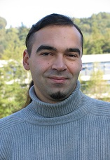
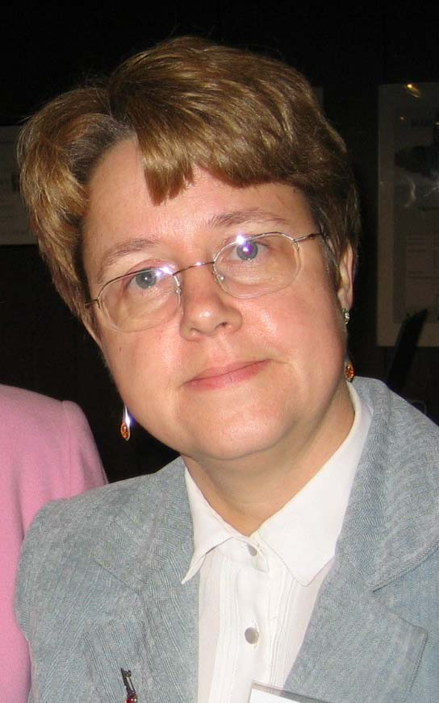
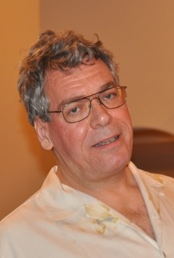

|
 |
Trends in Computer Algebraic Analysis
Viktor Levandovskyy
Assistant Professor, RWTH Aachen University
Algebraic Analysis has been coined by the Japanese group led by Mikio
Sato. In recent years many constructions of Algebraic Analysis have been
approached from the computer-algebraic point of view, with algorithms and
their implementations. Extension of such an interaction from linear
differential operators to linear difference, q-difference and
q-differential operators we call Computer-Algebraic Analysis. The
major object of study are systems of linear functional equations, their
properties, solutions (including those in terms of generalized functions)
and behaviour. Modern techniques of the ring theory, such as
Gel'fand-Kirillov dimension and Ore localization as well as methods of
homological algebra such as the purity filtration have been recently
turned into algorithms with the help of computer algebra, where Gröbner
bases play a prominent role. We will show the merits of these emerged
techniques and discuss their applicability to concrete problems with the
help of available implementations.
Home |
|
 |
Benefits and Barriers of Symbolic Computations on Clouds and
Grids
Dana Petcu
Professor, West University of Timisoara
The availability of theoretically infinite computational power through
Clouds and Grids offered new opportunities for expanding the range of
problems that are solved using symbolic computations. This expansion
raises also new concerns from the algorithmic design to the cost of
implementation. The movement towards using remote computational power
available for low cost is hindered not only by the efforts required to
transform the legacy codes like computer algebra systems into Cloud or
Grid enabled systems, but also by reluctance of adopting concepts like
pay-per-use.
In this context, the presentation focuses on highlighting the progress
already made towards using Clouds and Grids for symbolic computations and,
by this, pointing towards the benefits of using large-scale
e-infrastructures and encouraging their use. In order to support the main
ideas, the recent results of the European projects SCIEnce
(www.symcomp.org) -- using Grids -- and mOSAIC (www.mosaic-cloud.eu) --
using Clouds -- will be put forward.
The identification of the current barriers in migrating the software
systems for symbolic computations towards the Grids and Clouds, through
the lessons learned during the practical implementations, is essential for
stimulating the future research in the direction of overcoming them.
Therefore, another aim of the presentation is to underline the current
drawbacks in using Grids and Clouds for symbolic computations.
Home |
|
 |
Symbolic Computation in the Design of Coding Systems
Clifton Williamson
Distinguished Engineer, Proton Digital Systems
As bit densities on storage devices have increased, the corresponding
increase in channel error rates has necessitated the development of
powerful error correction systems. This talk will discuss some of the ways
in which symbolic computation can be used in the specification, design,
and verification of such coding systems.
For many years, algebraic codes, such as BCH and Reed-Solomon
codes, sufficed to meet industry error control needs. Computer algebra
systems, with their ability to handle finite field arithmetic, were
ideally suited for working with algebraic codes. Applications ranged from
the generation of optimized logic to a "finite field calculator" for use
in chip debugging.
Starting in the 1990's, the focus has turned to iterative,
"soft-decision" decoding schemes, such as Turbo Coding and Low Density
Parity Check (LDPC) codes. LDPC codes were discovered in the early 1960's,
but only recently has chip technology reached a point where these codes
can be implemented in practice. Based on large sparse matrices, these
codes also present a computational challenge to those constructing and
simulating the codes, as well as to those implementing and verifying
silicon systems based on those codes. The ability to perform symbolic
compuations has become a necessity and the role of computer algebra will
only grow as chips become more and more complex.
Home |
|
|
Roles and Expectations of Symbolic Computation in Automotive
Development
Tetsu Yamaguchi
Executive Vice President, Maplesoft
Since the late 20th century, the design and development process in the
automotive industry has changed radically with the rise of Model-Based
Development, MBD. Currently, in the automotive industry, MBD is applied
mainly to the design of control systems. Before MBD, control system design
involved the use of physical models, which would be either production
machines or prototypes. In this setting exploring various parameters in
the design space was time consuming and costly. With the introduction of
MBD, it is now possible to apply mathematical models in this setting. The
most frequently used models are ODE, DAE, statistical models and algebraic
equations. A full model will be composed of many components, which have
varying degrees of mathematical expression. "White-box" models are given
by equations whose form has some theoretical basis. "Black-box" models are
given by system-identified equations, that is equations or tables that
interpolate empirical data. "Gray-box" models provide a hybrid, combining
mathematical expressions with look up tables. This talk will describe how
symbolic computation may be used to simplify models involving several
independently developed components by taking a complete view of the
combined system. We examine the role of symbolic computation and market
requirements in order to realize the next generation of controllability
for automotive design. We will also discuss a different and wider
perspective of symbolic computation, from an engineering point of view,
aimed at the acceleration of the design process.
Home |